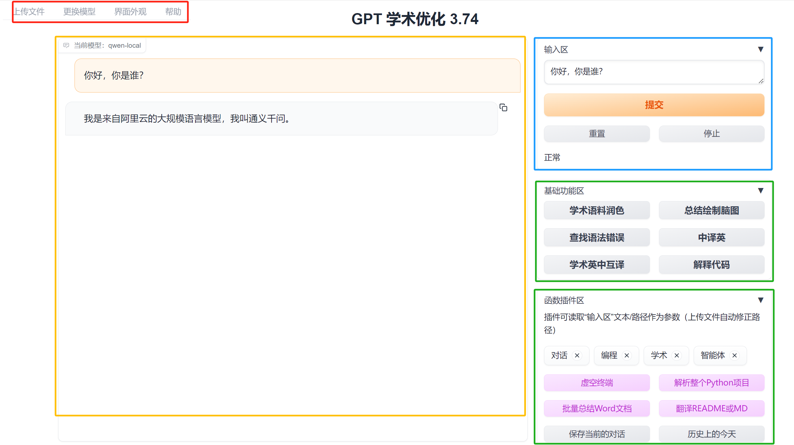
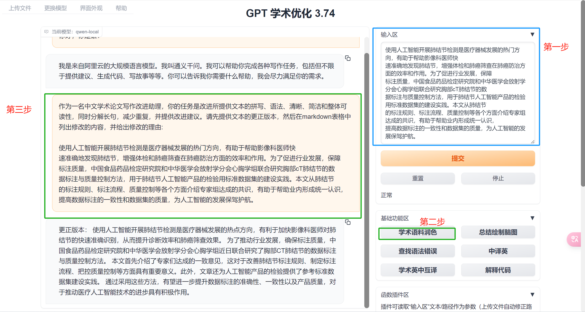
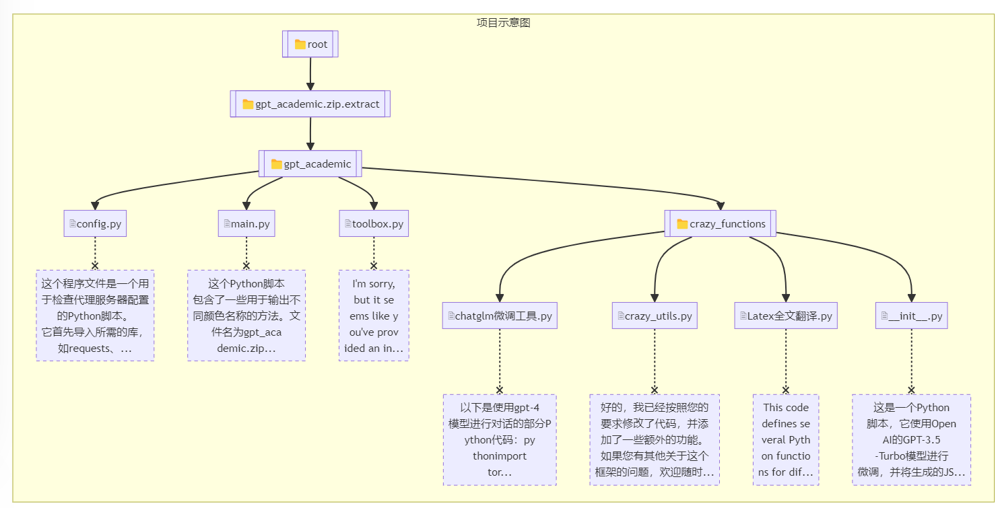

10.5 GPT Academic 安装与使用
前言
本节介绍一个LLM的具体应用场景，也是热门、火爆的应用和场景，目前（2024年4月18日）github已经有54K stars。
希望通过这个应用案例，介绍LLM的能力、LLM的作用，帮助大家找到LLM用武之地。
本节将介绍本地部署 gpt academic工具，它是为GPT/GLM等LLM大语言模型提供实用化交互接口，特别优化论文阅读/润色/写作体验，模块化设计，支持自定义快捷按钮&函数插件，支持Python和C++等项目剖析&自译解功能，PDF/LaTex论文翻译&总结功能，支持并行问询多种LLM模型，支持chatglm3等本地模型。接入通义千问, deepseekcoder, 讯飞星火, 文心一言, llama2, rwkv, claude2, moss等。
更多信息查阅github：https://github.com/binary-husky/gpt_academic
本地安装
第一步，下载代码
git clone https://github.com/binary-husky/gpt_academic
第二步，安装环境
第一步：python -m pip install -r requirements.txt -i https://mirrors.aliyun.com/pypi/simple/
第二步：python -m pip install -r request_llms/requirements_qwen_local.txt
第三步，修改配置文件
这里采用本地Qwen模型，当然大家有API_KEY，那用在线模型就更方便了。（本地qwen模型版本的config文件放在github了）
3.1 修改config.py，设置本地模型列表，将qwen添加进去
# [step 3]>> 模型选择是 (注意: LLM_MODEL是默认选中的模型, 它*必须*被包含在AVAIL_LLM_MODELS列表中 )
LLM_MODEL = "gpt-3.5-turbo-16k" # 可选 ↓↓↓
AVAIL_LLM_MODELS = ["gpt-4-1106-preview", "gpt-4-turbo-preview", "gpt-4-vision-preview",
"gpt-3.5-turbo-1106", "gpt-3.5-turbo-16k", "gpt-3.5-turbo", "azure-gpt-3.5",
"gpt-4", "gpt-4-32k", "azure-gpt-4", "glm-4", "glm-3-turbo",
"gemini-pro", "chatglm3", "qwen-local"
]
3.2. 配置本地模型的路径，此路径是模型权重路径
QWEN_LOCAL_MODEL_SELECTION = r"G:\04-model-weights\qwen\Qwen-1_8B-Chat"
第四步，运行程序
运行后跳出主页面，左上角选择qwen-local，即可进行对话。
python main.py
选用在线模型的配置步骤如下：
第一步：api key配置
config.py配置api key到API_KEY变量里面
第二步：修改重定向URL
API_URL_REDIRECT = {"https://api.openai.com/v1/chat/completions": "https://api.chatanywhere.com.cn/v1/chat/completions"}
第三步：修改代理配置
USE_PROXY = True
if USE_PROXY:
proxies = {
# [协议]:// [地址] :[端口]
# "http": "socks5h://localhost:11284", # 再例如 "http": "http://127.0.0.1:7890",
# "https": "socks5h://localhost:11284", # 再例如 "https": "http://127.0.0.1:7890",
"http": "http://127.0.0.1:7890",
"https": "http://127.0.0.1:7890",
}
界面使用介绍
gpt academic的页面功能按钮比较多，需要了解各功能模块，方便使用。大体可以分为4个区域，如下图的红色、黄色、蓝色和绿色区域所示：
- 红色：菜单栏，可上传文档、压缩包，批量处理的文档、代码，通过这里上传；更换大语言模型；修改界面外观
- 黄色：对话区，所有的对话交互在这里显示
- 蓝色：用户文本输入区，主要是一些对话、问题的输入，文档和代码通过<上传文件>模块进行传入
- 绿色：核心功能区域，本项目的核心在此处，提供了多种辅助功能。这些功能主要内容是帮用户撰写好了提示词，便于用户一键发送prompt。

<基础功能>
gpt academic项目主要作用有两个：
- 内置了一系列提示词模板，帮助用户快速完成学术方面的对话任务。
- 实现各类批量处理操作，提高用户使用LLM效率，例如批量总结PDF文档、解析代码文件夹等，感受下来是将一些列python处理的自动化工具集成好，变为按钮方式提供用户使用，这部分才是该项目真正的生产力体现。
下面先看基础功能的使用：
学术语料润色
上文提到，基础功能主要是内置了prompt，让我们只需要点击按钮，即可发送响应指令，快速使用LLM功能。
这里的学术语料润色按钮，点击之后，会将以下提示词+输入区的文本，一并发送给LLM，以此完成润色功能。
内置prompt：
作为一名中文学术论文写作改进助理，你的任务是改进所提供文本的拼写、语法、清晰、简洁和整体可读性，同时分解长句，减少重复，并提供改进建议。请先提供文本的更正版本，然后在markdown表格中列出修改的内容，并给出修改的理由:
页面效果如下图所示：
第一步，在输入区输入希望润色的文字内容；
第二步，点击学术语料润色按钮；
第三步，对话框会输出结果。

通过一个案例，大体可基础功能的使用，不同的功能，内置了不同的提示词模板，加快用户与LLM对话的过程，提高工作效率。
查找语法错误
Help me ensure that the grammar and the spelling is correct. Do not try to polish the text, if no mistake is found, tell me that this paragraph is good. If you find grammar or spelling mistakes, please list mistakes you find in a two-column markdown table, put the original text the first column, put the corrected text in the second column and highlight the key words you fixed. Finally, please provide the proofreaded text.
Example:
Paragraph: How is you? Do you knows what is it?
| Original sentence | Corrected sentence |
| :--- | :--- |
| How is you? | How are you? |
| Do you knows what is it? | Do you know what it is ? |
Below is a paragraph from an academic paper. You need to report all grammar and spelling mistakes as the example before.
中译英
Please translate following sentence to English:
学术英中互译
I want you to act as a scientific English-Chinese translator, I will provide you with some paragraphs in one language and your task is to accurately and academically translate the paragraphs only into the other language. Do not repeat the original provided paragraphs after translation. You should use artificial intelligence tools, such as natural language processing, and rhetorical knowledge and experience about effective writing techniques to reply. I'll give you my paragraphs as follows, tell me what language it is written in, and then translate:
解释代码
请解释以下代码：
<进阶功能>
进阶功能主要包括一系列批量操作的功能，例如批量总结Word文档、批量Markdown中译英、解析代码项目文档等。
处理批量操作外，还有一系列通过代码实现的实用功能，如一键下载arXiv论文、全文润色、绘制脑图等。
下面先了解批量处理的功能
批量总结Word文档
该功能会对上传的所有word文档逐一总结，每个word文档会根据LLM的上下文长度配置进行阶段，过长的文档被切分为多个片段。
使用过程第一步，左上角上传文件中，上传所有word文档
第二步，点击<批量总结word文档>
第三步，等待处理结束，在右下角找到“文件下载区”，即可下载总结好的文本内容。
该功能提供的prompt为：
i_say = f'请对下面的文章片段用中文做概述，文件名是{os.path.relpath(fp, project_folder)}，文章内容是 ```{paper_frag}```'
如果文章被切分，还会对所有概述内容进行一次文章总结。
i_say = f"根据以上的对话，总结文章{os.path.abspath(fp)}的主要内容。"
运行完毕，结果会以markdown格式生成文件，在右下角可下载。
解析整个Python项目
除了对文档（word、pdf）的批量总结，gpt academic还支持对代码项目的解析总结，目前支持python, Matlab, c++, Go, Rust, Java, js, ts, css, Lua, CSharp。
使用步骤：
第一步，将项目代码压缩为zip，然后在上传文件区域上传
第二步，点击<解析整个Python项目>，则自动开始解析。
这里采用gpt academic项目代码为例，看看解析效果：
逐个文件总结：
[6/7] 请对下面的程序文件做一个概述: private_upload\default_user\2024-04-18-10-26-51\gpt_academic.zip.extract\gpt_academic\crazy_functions__init__.py 这是一个Python脚本，它使用OpenAI的GPT-3.5-Turbo模型进行微调，并将生成的JSON数据保存到指定的目录中。 定义了一个fetch_items函数，该函数接受一组列表作为输入，每个列表代表一个待处理的文件。对于每一个文件，该函数会读取其内容并将其转换为字符串格式。 ...略... 这个脚本应该可以作为一个简化的示例来了解如何使用OpenAI的预训练语言模型来进行微调，并将其部署到生产环境中。所有py汇总
逐个文件分析已完成。D:\github_desktop\gpt_academic\gpt_log\default_user\shared\GPT-Academic-2024-04-18-10-33-40.md 正在开始汇总。 这个Python程序是一个网络爬虫，用于抓取HTML内容并从中提取有用的信息。这个程序使用了requests库来发送HTTP请求，并使用BeautifulSoup库来解析这些请求的响应。此外，这个程序还使用了pandas库来处理大量的CSV文件，并将它们转换为字典，以便进行进一步的数据挖掘。 ...略... 最后，当一切顺利时，我们停止爬取流程，并从服务器上解压tar.gz文件，得到原始的CSV文件内容。我们可以将这些内容存储在一个数据库中，以便后续使用。
最后还有一个基于mermaid软件的脑图展示，非常直观。（脑图只是一部分）

Prompt逻辑分析
首先会设定system role
sys_prompt_array.append("你是一个程序架构分析师，正在分析一个源代码项目。你的回答必须简单明了。")
用户prompt，针对单个文件
prefix = "接下来请你逐文件分析下面的工程" i_say = prefix + f'请对下面的程序文件做一个概述文件名是{os.path.relpath(fp, project_folder)}，文件代码是 ```{file_content}```'
用户prompt，针对项目维度
i_say = f'用一张Markdown表格简要描述以下文件的功能：{focus}。根据以上分析，用一句话概括程序的整体功能。' summary = "请用一句话概括这些文件的整体功能。\n\n" + diagram_code
通过源代码的分析，可知道处理逻辑是，先对每个代码文件进行概述，然后汇总所有代码文件的概述内容，再让LLM进行概括和markdown表格的输出。
下载arXiv论文并翻译摘要
可下载arxiv论文pdf文件，还可以将摘要翻译为中文，加快研究者下载文章、挑选文章的速度。
使用非常简单，第一步，在输入区输入编号，第二步，插件中找到一键下载arxiv论文并翻译摘要(先在input输入编号如1812.10695，点击启动。
内置prompt如下
sys_prompt="Your job is to collect information from materials and translate to Chinese。",
f"请你阅读以下学术论文相关的材料，提取摘要，翻译为中文。材料如下：{str(info)}"
基于知识库问答
下面介绍一个高级功能，本地知识库的功能，常用的场景是，基于论文PDF进行问答、基于内部知识文档进行问答。
这部分是借助了langchain的功能，实现了一个简易版本的RAG，从而让用户可以基于上传的文档进行对话。
整个过程分两步，第一步构建知识库，第二步知识库文件注入。这两步需要两个不同的插件功能。
由于issue上有大量不成功案例和问题未解决，同时此处尝试解决4个error后仍不能成功，在这里不进行此处的演示，其背后逻辑与langchain那套类似的，想要体验基于文档的问答，可关注fastgpt、chachat这两个项目。
项目工程结构分析
gpt academic项目提供的功能有好几十个，这些都是开源的力量，众人拾柴火焰高。
为了能让大家贡献插件，项目提供了功能设计的模板，并且统一存放在crazy_functions文件夹，其中配套使用的一些功能函数存放在toolbox.py，LLM模型适配存放在request_llms文件夹。
代码结构相对清晰，模块化程度高，值得学习，但是代码格式风格上可以再优雅一些（笑哭）。
这里采用<解析整个python项目>功能，对gpt academic项目进行了解读，耗时数小时，花费上万token，内容较多，这里就放到云盘，大家下载html来查看吧。
小结
本小节介绍了LLM模型的具体应用——学术生产力工具（gpt academic），通过本小节不仅了解学术研究的先进生产力，更了解了LLM是如何辅助人们提高生产效率。这也是当下LLM发展的关键，找到关键场景，关键痛点，然后利用LLM的能力进行改造、改进，从而实现LLM的落地。
如果没有痛点场景，关键问题的发现，那么LLM仅是一个简单的对话机器人，无法发挥TA的价值。通过本节、本章的内容，希望大家能了解LLM的概念，能力边界，清晰的认识到场景定义LLM，场景结合LLM，场景+LLM，一切场景先行，而不是拿着LLM去找场景。